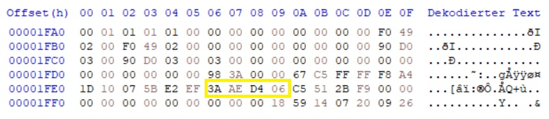

Zulassungsnummer ändern auf Original ST25 NSM (In Scheibe eingeprägt)
Zuerst lauffähiges Image bearbeiten, wenn Original Zul.-Beginn und Code Nr. nicht mehr vorhanden sind.
Den Gelb gekennzeichneten Bereich mit z.B. EF AB 5C 3A auffüllen. Falls dieser Schritt nicht ausgeführt wird, lässt sich die Zulassungsnummer über die Tastatur nicht ändern und es wird gesperrt angezeigt!

Jetzt steht die Zulassungsnummer auf 000000000. Spielmodul stecken und über ST25 Tastatur die Original Zulassungsnummer (In Scheibe eingeprägt) eingeben.
Jetzt steht die Original Zulassungsnummer im Image. Beim Drücken der beiden Risikotasten wird nun die Original Zul. Nr. angezeigt.
Hier geht es zum Zulassungsnummer Patcher, wobei ich nicht garantieren kann, dass es ohne den in dieser Anleitung beschriebenen Schritt (Eingabe über St25 Tastatur) funktioniert!